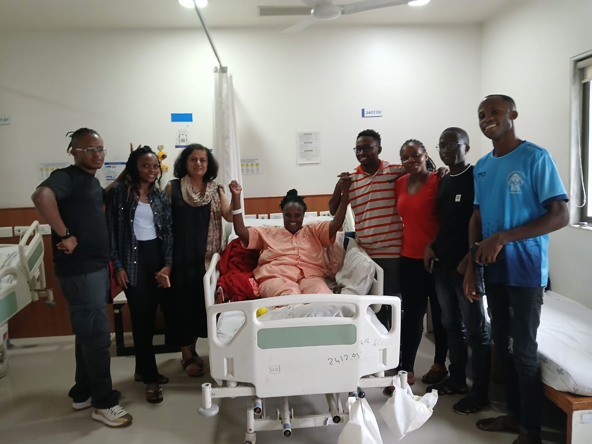
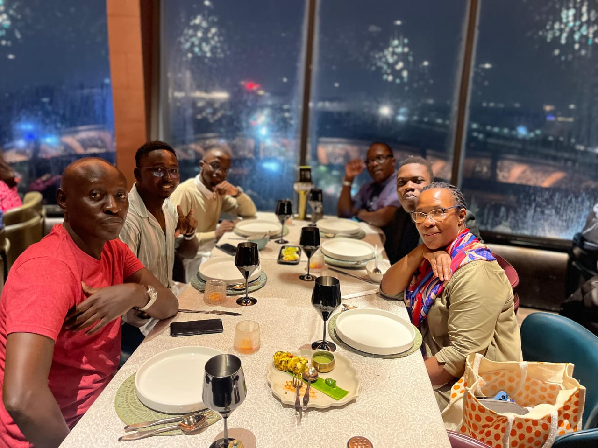
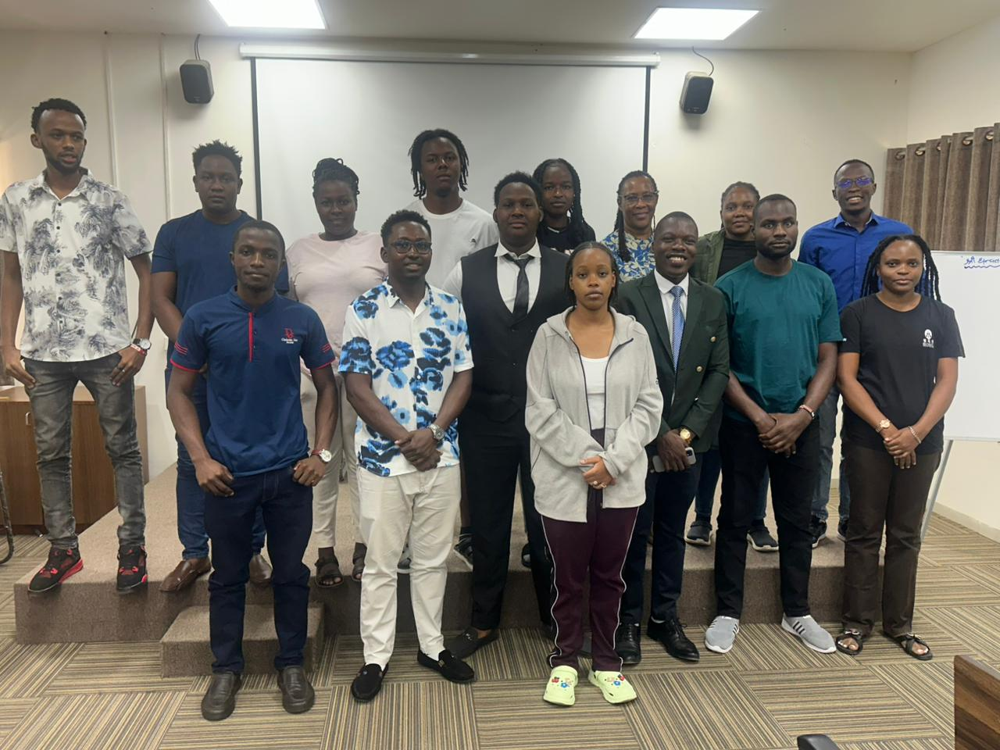
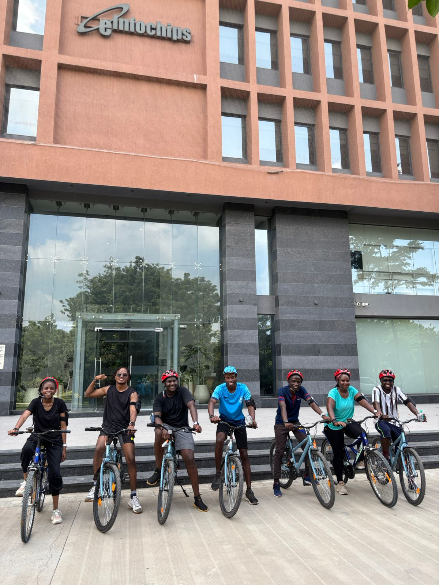
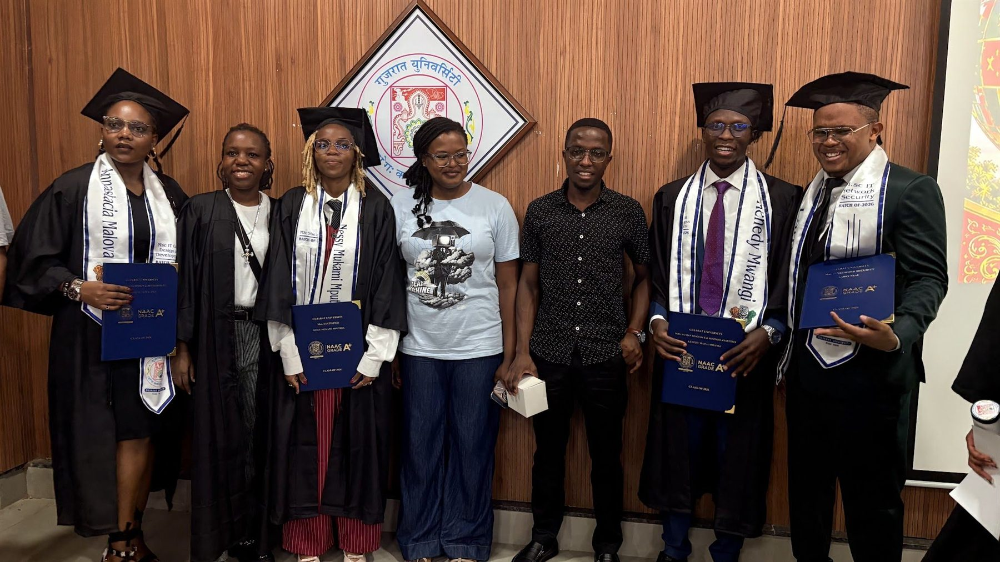
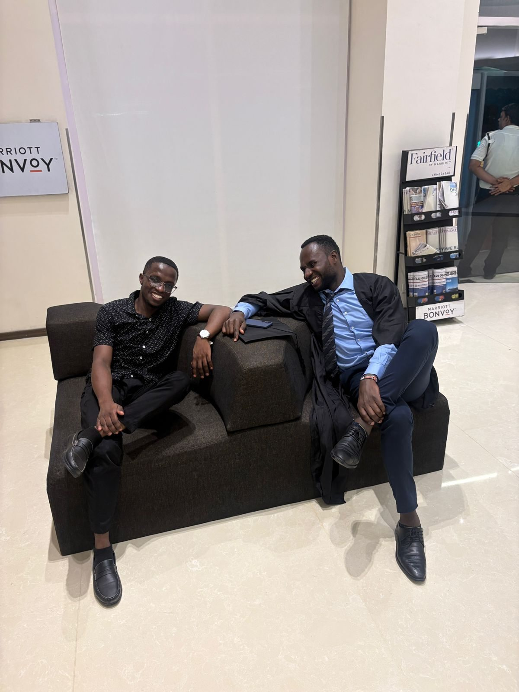

Representation
Embassy Visits
Beginnings of the international journey, strengthened through conversations, guidance, and institutional connection.




A collection of meaningful moments that reflect the shared experiences, growth, and connections within our welfare community.
Beginnings of the international journey, strengthened through conversations, guidance, and institutional connection.
Moments of resilience where members show up with practical support, compassion, and steady presence.
Friendships grow through relaxed days, shared movement, and the small experiences that make life away from home feel connected.

Graduation is one meaningful highlight within a wider story of support, belonging, and shared progress.
Together, we have shared experiences that reflect growth, resilience, friendship, and achievement across many moments of our journey as a community.
Welfare Member & Graduate
"Being far from home wasn't always easy, but this welfare became more than a community to me—it became family. Through every challenge and every success, I found people who supported, encouraged, and believed in me. As I celebrate my graduation today, I'm grateful not only for the degree I've earned but also for the friendships and sense of belonging I've gained along the way. This family made a foreign country feel like home."
Our celebration was made even more special by the presence of both graduating and non-graduating members. It was a beautiful reminder that our welfare is more than an organization—it is a family. We celebrate achievements, friendships, support, and the sense of belonging that connects us all.

Some of the best moments aren't on the stage or in the spotlight. After the celebration dinner, members gathered to relax, reflect, and enjoy each other's company. These simple conversations and shared experiences are what transform a community into lasting friendships.
Standing together in times of need.
Maintaining strong ties with Kenyan institutions.
Building friendships beyond academics.
Join a chapter that supports, connects, and grows together.
Join Now